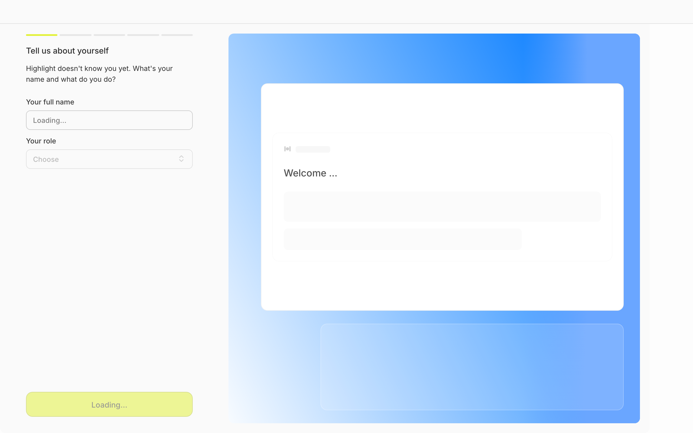
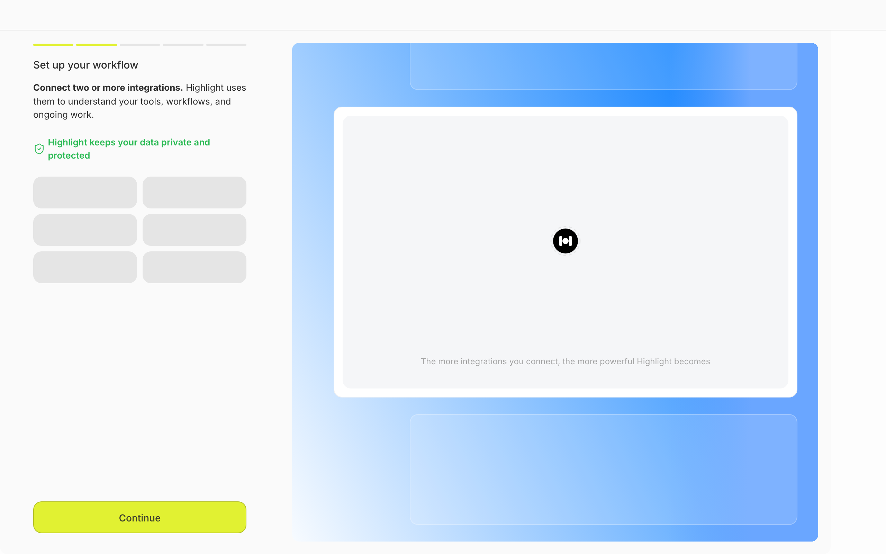
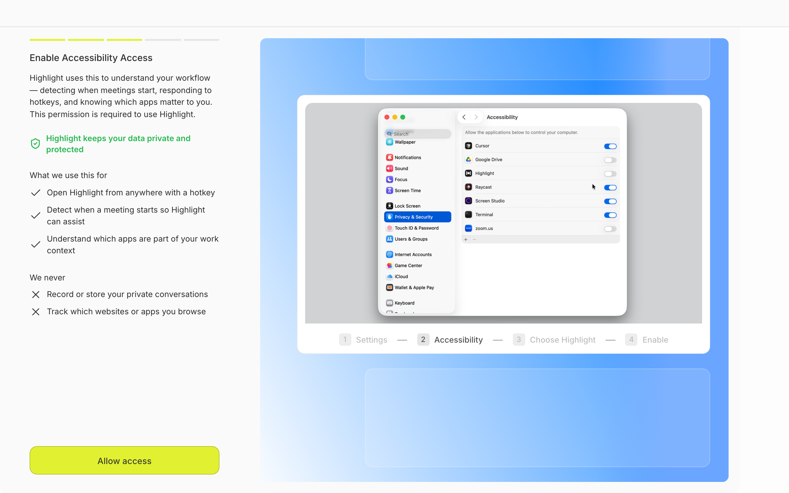
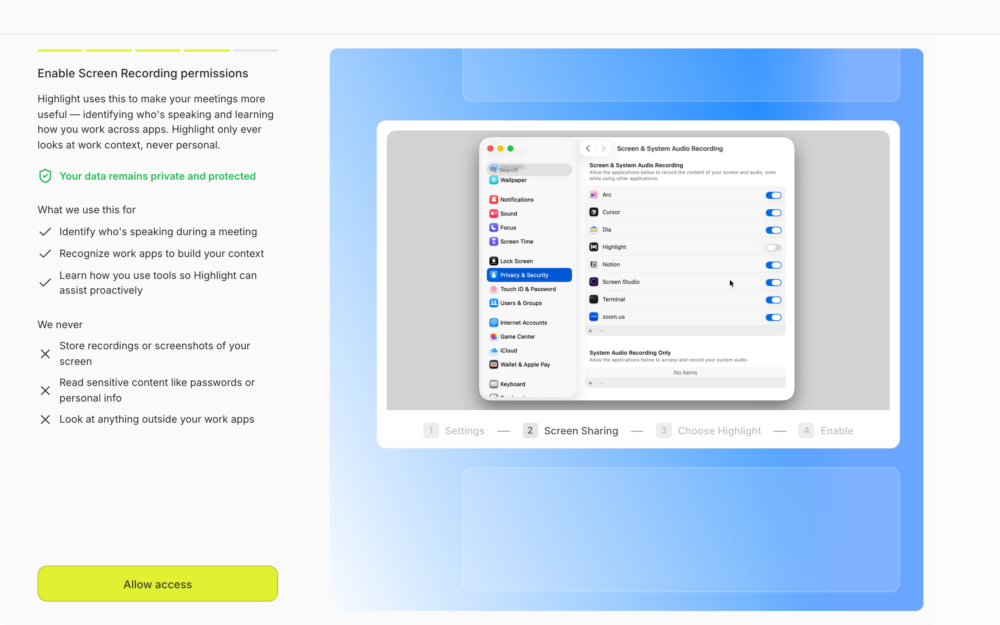
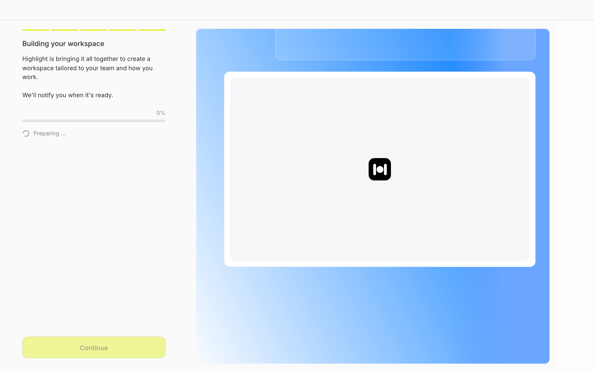

Design Research: Highlight Desktop Onboarding Aesthetics
TL;DR
The current onboarding has solid bones (2-pane layout, stepper, well-considered permission priming) but reads as two visual languages fighting each other: a quiet productivity left pane vs. a marketing-landing right pane with a saturated blue gradient and a chartreuse CTA that hovers in no-man's-land. Premium peers (Linear, Vercel, Stripe, Raycast) win by picking one accent and using it for meaning only, treating the preview pane as real product surface rather than a decorative card on a gradient.
Three highest-leverage moves: kill the gradient hero, make the right pane an actual product preview, and turn the building step into a narrated indexing log.
Current State






Recommendations
1. Replace the always-on blue gradient with neutral product chrome on most steps
The saturated blue gradient looks like a marketing landing page, not a desktop AI tool. Premium peers use gradients sparingly — usually only on one hero moment (login/welcome) — and keep the rest of the chrome neutral so the content gets to be the visual moment. Reserve the gradient (or replace it with a quieter one) for the login step only. From profile onward, the right pane should be a clean off-white or near-black surface that lets a real product preview be the visual anchor.
TODAY PROPOSED (login only keeps hero) ┌───────┬───────────────┐ ┌───────┬───────────────┐ │ form │ █▓▒░ GRADIENT │ │ form │ █▓▒░ gradient │ ← login │ │ ░▒▓█ + card │ │ │ + product hero│ └───────┴───────────────┘ └───────┴───────────────┘ PROFILE / INTEGRATIONS / PERMISSIONS / BUILDING ┌───────┬───────────────────────────────┐ │ │ neutral surface │ │ form │ ┌─────────────────────────┐ │ │ │ │ REAL PRODUCT PREVIEW │ │ │ │ │ (live updating) │ │ │ │ └─────────────────────────┘ │ └───────┴───────────────────────────────┘
2. Make the right pane a live preview, not a decorative card
This is the Airtable move — the best-known win in two-pane onboarding. As the user types their name on the profile step, the right pane shows the actual Highlight UI welcoming them by that name. As they connect Slack, the integrations preview shows a Slack message actually surfacing in a fake meeting brief. The right pane stops being a brochure and becomes a promise the user is helping construct.
PROFILE STEP ┌────────────────┬──────────────────────────────────┐ │ Your name │ ┌──── Highlight ──────────┐ │ │ [Vasudev_____] │ │ Good morning, Vasudev │ │ ← updates live │ │ │ ▸ Meeting in 12 min │ │ │ Your role │ │ ▸ 3 follow-ups due │ │ │ [Designer ▾] │ └─────────────────────────┘ │ └────────────────┴──────────────────────────────────┘
3. Turn "Building your workspace" into a narrated, transparent log
A static 0% with "Preparing…" makes the user wonder if the app is broken. Modern AI-app best practice (per Cloudscape, Telerik, NN/g) is contextual loading messages that tell the user what's happening now and what's done. Replace the single progress bar with a streaming checklist.
BUILDING STEP — proposed ┌──────────────────────────────────────────┐ │ Building your workspace │ │ ──────────────────────────────────── │ │ ✓ Connected Slack (4 channels) │ │ ✓ Indexed 142 screenshots │ │ ▸ Analyzing recent meetings… ◐ │ │ ◌ Personalizing your daily brief │ │ ◌ Almost done │ │ │ │ This takes about 90 seconds. │ │ You can close this window — we'll │ │ ping you when it's ready. │ └──────────────────────────────────────────┘
Hide the Continue button until complete (or replace with a clear "Notify me when ready" link), and the perceived speed of the whole onboarding goes up even if real time is identical.
4. Pick ONE accent color and use it for meaning only
Right now the chartreuse CTA fights every surface it sits on. Premium peers (Stripe, Linear, Vercel) use a single brand accent applied only to: primary actions, current-step indication, and positive confirmations. Everything else is neutrals.
- Keep chartreuse but desaturate it — ~25% saturation drop, paired with a darker neutral form bg so the CTA reads "premium" not "warning label"
- Move chartreuse to a darker context — flip the form pane to near-black; chartreuse pops naturally against dark backgrounds (this is how Linear's indigo works)
- Cool the chartreuse to a more saturated indigo/violet — most premium-feeling option, matches the Linear/Vercel/Raycast family
Whichever you pick, kill the chartreuse when it's disabled (current building-step button looks tappable when it isn't) and never put chartreuse on the gradient — they collide chromatically.
5. Label the stepper segments
The current stepper is just colored bars — no labels. Users have no idea what step 3 vs 5 is until they get there. Add tiny labels (under 3 words each) per segment.
TODAY: ━━━━━━━━━━ ─────── ─────── ─────── ─────── ───────
PROPOSED:
━━━━━━━━━━ ─────── ─────── ─────── ─────── ───────
Profile Connect Access Record Build
⮕current
6. Split or collapse the dense permission screens
Steps 4 + 5 are nearly identical templates with heavy text at the highest-anxiety moment of the flow.
- Collapse "We never" behind a disclosure ("What we don't do →") so the default state has half the text
- Vary the reassurance copy per step: accessibility = "We never log keystrokes"; screen recording = "We never store screen frames"
Also: rename "Allow access" → "Open System Settings" (the button doesn't grant the permission — the OS does — and the current label implies a one-tap grant).
7. Show real integration logos in the integrations skeleton
Empty grey rectangles tell the user nothing. Showing greyed-out named logos (Slack, Linear, Notion, Google Calendar, GitHub) before they're loaded reduces loading anxiety and previews what's coming.
Patterns (table stakes)
- One question per screen — Linear's whole onboarding is "one input per step." Highlight already does this. ✅
- Skip / "I'll do this later" on optional steps — Notion, Airtable, Raycast all allow it. Highlight integrations step doesn't.
- Personalize copy after name capture — once they type their name in step 2, every subsequent screen addresses them by name.
- Native macOS visual language for permission screens — Highlight already does this beautifully. ✅
- Restrained color — one accent for meaning, not decoration. Stripe, Linear, Vercel all live by this.
- Inter / Geist / Söhne type — Highlight already uses Inter. ✅
Anti-Patterns
- Decorative gradients on persistent surfaces — gradients are a hero/marketing tool, not chrome.
- Static "Loading…" with no progress narration — generic loaders feel broken in an AI app.
- Empty preview panes — if you reserve 60% of canvas for a preview, the preview must earn it.
- Dense permission "trust dumps" — too many ✓s and ✗s increase cognitive load when users are already anxious.
- Unlabeled progress bars — segmented bars without text don't aid wayfinding.
- Ambiguous CTAs — "Allow access" implies the button grants permission; it actually opens System Settings.
Unique Angles (X100 details worth stealing)
- Linear's "command palette teaches itself" — embed your magic-dot shortcut as a tiny footer on each step:
⌘ Hold ⌘ anywhere to open Highlight. Teach muscle memory during onboarding. - Arc's "playable hero" — Arc's welcome screen is a live demo, not a static graphic. Make the right pane of step 1 a 6-second looping screen-recording of Highlight in action.
- Notion's "demo data on the welcome page" — when building reaches 100%, surface ONE real Highlight artifact (e.g., a generated brief of the user's upcoming meeting) instead of a generic "all done!".
- Apple HIG "pre-permission priming" — Highlight already does this; lean in harder with a small animated illustration of the permission in use.
Findings
The visual language problem
The layout is correct. The issue is that the two panes speak different visual dialects:
- Left pane: muted neutrals, subtle borders, low-contrast subtext. Reads "considered productivity tool."
- Right pane: saturated blue gradient + soft floating cards + chartreuse-adjacent CTA on the left. Reads "marketing landing page."
When a user moves their eyes left-to-right, they're switching mental modes. Premium peers solve this by committing the whole flow to one dialect (Linear's onboarding is monochromatic-and-restrained on both sides) or by using the right pane to actually show product.
The "static preview" problem
Three of the six steps have right-pane content that's basically a logo or empty card (profile, integrations, building). That's 50% of the flow where the right pane is a wasted advert. Airtable's onboarding is the canonical counterexample: as users select options on the left, the right pane renders the artifact they're creating.
The "static load" problem
Loading-state research (Cloudscape, Telerik, NN/g) converges on the same conclusion: users tolerate long loads if they understand what's happening. Replace "Preparing…" with a streaming list of done/in-progress/upcoming stages.
The CTA-color problem
Chartreuse on the lower-left of a light form pane, against a saturated-blue right pane, creates a tritone that doesn't read as a designed system. Linear is cool grays plus indigo, full stop. Vercel is near-monochrome plus accent. Stripe is neutrals plus measured indigo. The fix isn't necessarily ditching chartreuse — it's giving it somewhere chromatically calm to live.
Sources
- How Stripe, Linear, and Vercel Ship Premium UI — Mantlr
- Notion's clever onboarding — Appcues
- Linear's thoughtful onboarding — Medium
- Loading UI/UX Patterns for AI Applications — Telerik
- Generative AI loading states — Cloudscape Design System
- The Art of Stepper UI Design — Lollypop
- Airtable Onboarding Wizard — Candu
- Permission Request Design — NN/g
- Vercel Design System Breakdown — SeedFlip
- Apple HIG — Privacy
- Arc Browser Onboarding — SaaSUI
- Arc Desktop Onboarding — Page Flows
- Linear Onboarding Flow — Page Flows